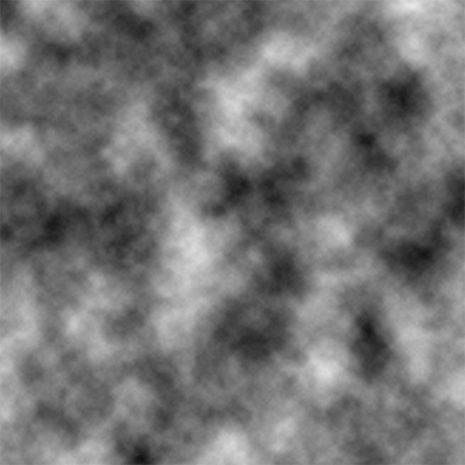

Imagine you're Notch, or Jeb, or whoever, and you need to add environmental variety to this amazing game called Minecraft. For the terrain generation, you've been using noise (specifically multi-octave perlin noise) which looks like the image below for things like terrain height and similar. And you can't help but think, "Wow! This would be a great way to represent values that affect how an environment works, like temperature and humidity!" The reason for this is thatthis noise is smooth. However it would be nice (for generating things like structures) if there wasn't infinitely many values that each of these could take up. So, you seperate them into biomes, where you pick some interval of traits and it maps to a biome, which will generate a specific way with specific structures and features.

So you decide that there are going to be different independent noise parameters and each biome is going to only for some groups of values. Probably because it's easy to program, you decide that you're going to this up on intervals along each axis, where each biome covers a certain interval on every axis. Then to cover everything you make it so biomes can have multiple of these interval groups. It may never even occur to you that these noise parameters could be represented in a graph, where you colour each section depending on the biome it ends up referring to. If you were mschae23 however, you would realize these do map to a hypercuboid, and name the corresponding class in the Yarn Mappings "NoiseHypercube". In modern minecraft, there are 6 parameters which affect biome generation: Continentalness, Weirdness, Temperature, Humidity, Erosion and Depth. This means that this graph would take up 6 dimensions and be a hypercube, and each group of intervals a biome maps to would be a 6 dimensional hypercuboid. This graph, is what I call the noise hypercube. This is because it's closer to a hypercube than what mschae23 called NoiseHypercube, which are the hypercuboid groups of intervals which map to a biome.
Sadly for me, and many other people, we can't see in 6 dimensions, and even if we could, the fact our screens only show 2 dimension images means that we can't fully visualize the true beauty of the noise hypercube. However, we can get glipses of its true beauty, through tools I've made like like the 2D Slice Visualizer. If all of this has seemed like jargon to you, I would HIGHLY recommend you look at the slice visualizer (I even linked it again for you!).